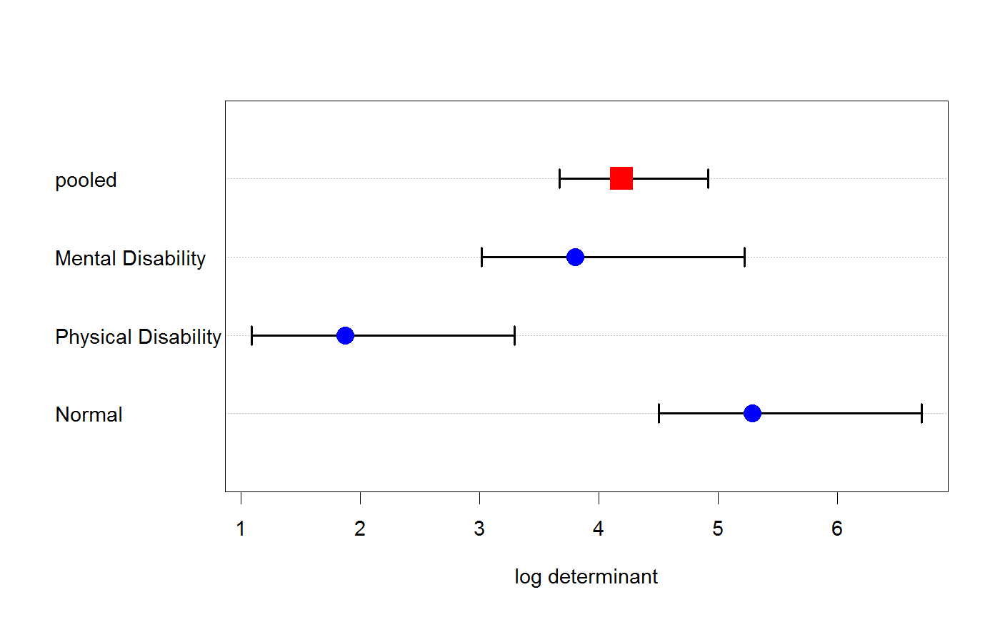
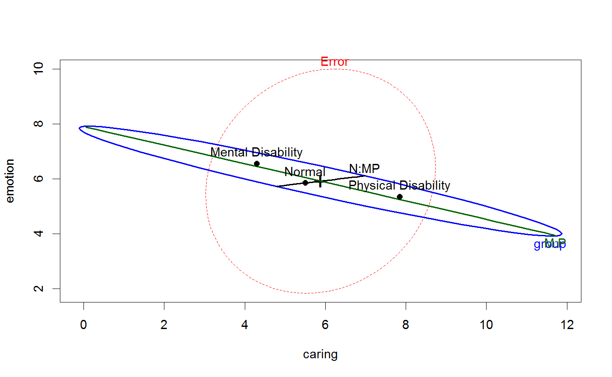
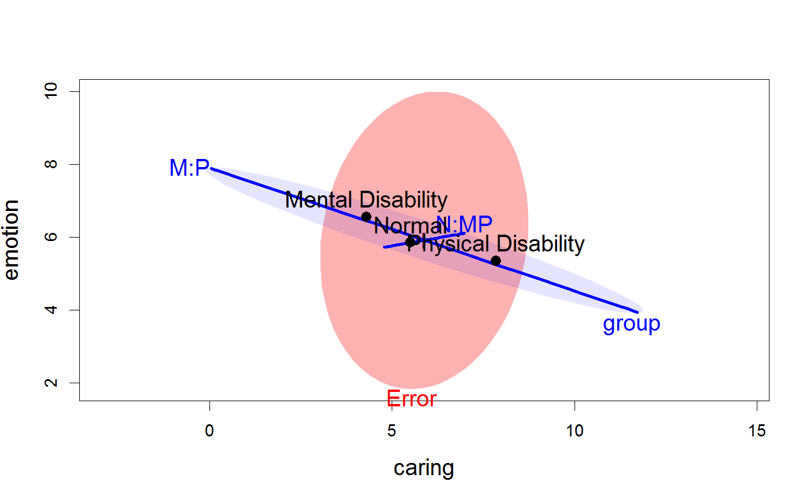

<!-- Generated by pkgdown: do not edit by hand -->
<!DOCTYPE html>
<html>
  <head>
  <meta charset="utf-8">
<meta http-equiv="X-UA-Compatible" content="IE=edge">
<meta name="viewport" content="width=device-width, initial-scale=1.0">

<title>Father Parenting Competance — Parenting • heplots</title>

<!-- jquery -->
<script src="https://code.jquery.com/jquery-3.1.0.min.js" integrity="sha384-nrOSfDHtoPMzJHjVTdCopGqIqeYETSXhZDFyniQ8ZHcVy08QesyHcnOUpMpqnmWq" crossorigin="anonymous"></script>
<!-- Bootstrap -->
<link href="https://maxcdn.bootstrapcdn.com/bootswatch/3.3.7/cerulean/bootstrap.min.css" rel="stylesheet" crossorigin="anonymous">

<script src="https://maxcdn.bootstrapcdn.com/bootstrap/3.3.7/js/bootstrap.min.js" integrity="sha384-Tc5IQib027qvyjSMfHjOMaLkfuWVxZxUPnCJA7l2mCWNIpG9mGCD8wGNIcPD7Txa" crossorigin="anonymous"></script>

<!-- Font Awesome icons -->
<link href="https://maxcdn.bootstrapcdn.com/font-awesome/4.6.3/css/font-awesome.min.css" rel="stylesheet" integrity="sha384-T8Gy5hrqNKT+hzMclPo118YTQO6cYprQmhrYwIiQ/3axmI1hQomh7Ud2hPOy8SP1" crossorigin="anonymous">


<!-- pkgdown -->
<link href="../pkgdown.css" rel="stylesheet">
<script src="../jquery.sticky-kit.min.js"></script>
<script src="../pkgdown.js"></script>
  
  
<!-- mathjax -->
<script src='https://mathjax.rstudio.com/latest/MathJax.js?config=TeX-AMS-MML_HTMLorMML'></script>

<!--[if lt IE 9]>
<script src="https://oss.maxcdn.com/html5shiv/3.7.3/html5shiv.min.js"></script>
<script src="https://oss.maxcdn.com/respond/1.4.2/respond.min.js"></script>
<![endif]-->


  </head>

  <body>
    <div class="container template-reference-topic">
      <header>
      <div class="navbar navbar-default navbar-fixed-top" role="navigation">
  <div class="container">
    <div class="navbar-header">
      <button type="button" class="navbar-toggle collapsed" data-toggle="collapse" data-target="#navbar">
        <span class="icon-bar"></span>
        <span class="icon-bar"></span>
        <span class="icon-bar"></span>
      </button>
      <a class="navbar-brand" href="../index.html">heplots</a>
    </div>
    <div id="navbar" class="navbar-collapse collapse">
      <ul class="nav navbar-nav">
        <li>
  <a href="../index.html">
    <span class="fa fa-home fa-lg"></span>
     
  </a>
</li>
<li>
  <a href="../reference/index.html">Reference</a>
</li>
      </ul>
      
      <ul class="nav navbar-nav navbar-right">
        
      </ul>
    </div><!--/.nav-collapse -->
  </div><!--/.container -->
</div><!--/.navbar -->

      
      </header>

      <div class="row">
  <div class="col-md-9 contents">
    <div class="page-header">
    <h1>Father Parenting Competance</h1>
    </div>

    
    <p>The data, from an exercise given by Meyers et al. (2006)
relates to 60 fathers assessed on three subscales of a Perceived Parenting Competance Scale.
The fathers were selected from three groups:
(a) fathers of a child with no disabilities;
(b) fathers with a physically disabled child;
(c) fathers with a mentally disabled child.</p>
    

    <pre class="usage"><span class='fu'>data</span>(<span class='st'>"Parenting"</span>)</pre>
        
    <h2 class="hasAnchor" id="format"><a class="anchor" href="#format"></a>Format</h2>

    <p>A data frame with 60 observations on the following 4 variables.</p><dl class='dl-horizontal'>
    <dt><code>group</code></dt><dd><p>a factor with levels <code>Normal</code> <code>Physical Disability</code> <code>Mental Disability</code></p></dd>
    <dt><code>caring</code></dt><dd><p>caretaking responsibilities, a numeric vector</p></dd>
    <dt><code>emotion</code></dt><dd><p>emotional support provided to the child, a numeric vector</p></dd>
    <dt><code>play</code></dt><dd><p>recreational time spent with the child, a numeric vector</p></dd>
  </dl>
    
    <h2 class="hasAnchor" id="details"><a class="anchor" href="#details"></a>Details</h2>

    <p>The scores on the response variables are discrete.</p>
    
    <h2 class="hasAnchor" id="source"><a class="anchor" href="#source"></a>Source</h2>

    <p>Meyers, L. S., Gamst, G, &amp; Guarino, A. J. (2006).
<em>Applied Multivariate Research: Design and Interpretation</em>,
Thousand Oaks, CA: Sage Publications,
<a href='www.sagepub.com/amrStudy'>www.sagepub.com/amrStudy</a>, Exercises 10B.</p>
    

    <h2 class="hasAnchor" id="examples"><a class="anchor" href="#examples"></a>Examples</h2>
    <pre class="examples"><div class='input'><span class='fu'>data</span>(<span class='no'>Parenting</span>)
<span class='fu'>require</span>(<span class='no'>car</span>)

<span class='co'># fit the MLM</span>
<span class='no'>parenting.mod</span> <span class='kw'>&lt;-</span> <span class='fu'>lm</span>(<span class='fu'>cbind</span>(<span class='no'>caring</span>, <span class='no'>emotion</span>, <span class='no'>play</span>) ~ <span class='no'>group</span>, <span class='kw'>data</span><span class='kw'>=</span><span class='no'>Parenting</span>)
<span class='fu'><a href='http://www.rdocumentation.org/packages/car/topics/Anova'>Anova</a></span>(<span class='no'>parenting.mod</span>)</div><div class='output co'>#&gt; 
#&gt; Type II MANOVA Tests: Pillai test statistic
#&gt;       Df test stat approx F num Df den Df    Pr(&gt;F)    
#&gt; group  2   0.94836   16.833      6    112 8.994e-14 ***
#&gt; ---
#&gt; Signif. codes:  0 <U+0091>***<U+0092> 0.001 <U+0091>**<U+0092> 0.01 <U+0091>*<U+0092> 0.05 <U+0091>.<U+0092> 0.1 <U+0091> <U+0092> 1</div><div class='input'>
<span class='co'># Box's M test</span>
<span class='fu'><a href='boxM.html'>boxM</a></span>(<span class='no'>parenting.mod</span>)</div><div class='output co'>#&gt; 
#&gt; 	Box's M-test for Homogeneity of Covariance Matrices
#&gt; 
#&gt; data:  Y
#&gt; Chi-Sq (approx.) = 28.343, df = 12, p-value = 0.004927
#&gt; </div><div class='input'><span class='fu'>plot</span>(<span class='fu'><a href='boxM.html'>boxM</a></span>(<span class='no'>parenting.mod</span>))</div><div class='img'></div><div class='input'>
<span class='no'>parenting.mod</span> <span class='kw'>&lt;-</span> <span class='fu'>lm</span>(<span class='fu'>cbind</span>(<span class='no'>caring</span>, <span class='no'>emotion</span>, <span class='no'>play</span>) ~ <span class='no'>group</span>, <span class='kw'>data</span><span class='kw'>=</span><span class='no'>Parenting</span>)
<span class='fu'><a href='http://www.rdocumentation.org/packages/car/topics/Anova'>Anova</a></span>(<span class='no'>parenting.mod</span>)</div><div class='output co'>#&gt; 
#&gt; Type II MANOVA Tests: Pillai test statistic
#&gt;       Df test stat approx F num Df den Df    Pr(&gt;F)    
#&gt; group  2   0.94836   16.833      6    112 8.994e-14 ***
#&gt; ---
#&gt; Signif. codes:  0 <U+0091>***<U+0092> 0.001 <U+0091>**<U+0092> 0.01 <U+0091>*<U+0092> 0.05 <U+0091>.<U+0092> 0.1 <U+0091> <U+0092> 1</div><div class='input'><span class='co'># test contrasts</span>
<span class='fu'>print</span>(<span class='fu'><a href='http://www.rdocumentation.org/packages/car/topics/linearHypothesis'>linearHypothesis</a></span>(<span class='no'>parenting.mod</span>, <span class='st'>"group1"</span>), <span class='kw'>SSP</span><span class='kw'>=</span><span class='fl'>FALSE</span>)</div><div class='output co'>#&gt; 
#&gt; Multivariate Tests: 
#&gt;                  Df test stat approx F num Df den Df     Pr(&gt;F)    
#&gt; Pillai            1 0.5210364 19.94376      3     55 7.1051e-09 ***
#&gt; Wilks             1 0.4789636 19.94376      3     55 7.1051e-09 ***
#&gt; Hotelling-Lawley  1 1.0878413 19.94376      3     55 7.1051e-09 ***
#&gt; Roy               1 1.0878413 19.94376      3     55 7.1051e-09 ***
#&gt; ---
#&gt; Signif. codes:  0 <U+0091>***<U+0092> 0.001 <U+0091>**<U+0092> 0.01 <U+0091>*<U+0092> 0.05 <U+0091>.<U+0092> 0.1 <U+0091> <U+0092> 1</div><div class='input'><span class='fu'>print</span>(<span class='fu'><a href='http://www.rdocumentation.org/packages/car/topics/linearHypothesis'>linearHypothesis</a></span>(<span class='no'>parenting.mod</span>, <span class='st'>"group2"</span>), <span class='kw'>SSP</span><span class='kw'>=</span><span class='fl'>FALSE</span>)</div><div class='output co'>#&gt; 
#&gt; Multivariate Tests: 
#&gt;                  Df test stat approx F num Df den Df     Pr(&gt;F)    
#&gt; Pillai            1 0.4293815 13.79555      3     55 8.0113e-07 ***
#&gt; Wilks             1 0.5706185 13.79555      3     55 8.0113e-07 ***
#&gt; Hotelling-Lawley  1 0.7524844 13.79555      3     55 8.0113e-07 ***
#&gt; Roy               1 0.7524844 13.79555      3     55 8.0113e-07 ***
#&gt; ---
#&gt; Signif. codes:  0 <U+0091>***<U+0092> 0.001 <U+0091>**<U+0092> 0.01 <U+0091>*<U+0092> 0.05 <U+0091>.<U+0092> 0.1 <U+0091> <U+0092> 1</div><div class='input'>

<span class='fu'><a href='heplot.html'>heplot</a></span>(<span class='no'>parenting.mod</span>)</div><div class='img'></div><div class='input'><span class='co'># display tests of contrasts</span>
<span class='no'>hyp</span> <span class='kw'>&lt;-</span> <span class='fu'>list</span>(<span class='st'>"N:MP"</span> <span class='kw'>=</span> <span class='st'>"group1"</span>, <span class='st'>"M:P"</span> <span class='kw'>=</span> <span class='st'>"group2"</span>)
<span class='fu'><a href='heplot.html'>heplot</a></span>(<span class='no'>parenting.mod</span>, <span class='kw'>hypotheses</span><span class='kw'>=</span><span class='no'>hyp</span>)</div><div class='img'></div><div class='input'>
<span class='co'># make a prettier plot</span>
<span class='fu'><a href='heplot.html'>heplot</a></span>(<span class='no'>parenting.mod</span>, <span class='kw'>hypotheses</span><span class='kw'>=</span><span class='no'>hyp</span>, <span class='kw'>asp</span><span class='kw'>=</span><span class='fl'>1</span>,
       <span class='kw'>fill</span><span class='kw'>=</span><span class='fl'>TRUE</span>, <span class='kw'>fill.alpha</span><span class='kw'>=</span><span class='fu'>c</span>(<span class='fl'>0.3</span>,<span class='fl'>0.1</span>),
       <span class='kw'>col</span><span class='kw'>=</span><span class='fu'>c</span>(<span class='st'>"red"</span>, <span class='st'>"blue"</span>),
       <span class='kw'>lty</span><span class='kw'>=</span><span class='fu'>c</span>(<span class='fl'>0</span>,<span class='fl'>0</span>,<span class='fl'>1</span>,<span class='fl'>1</span>), <span class='kw'>label.pos</span><span class='kw'>=</span><span class='fu'>c</span>(<span class='fl'>1</span>,<span class='fl'>1</span>,<span class='fl'>3</span>,<span class='fl'>2</span>),
       <span class='kw'>cex</span><span class='kw'>=</span><span class='fl'>1.4</span>, <span class='kw'>cex.lab</span><span class='kw'>=</span><span class='fl'>1.4</span>, <span class='kw'>lwd</span><span class='kw'>=</span><span class='fl'>3</span>)</div><div class='img'></div><div class='input'>
<span class='fu'>pairs</span>(<span class='no'>parenting.mod</span>, <span class='kw'>fill</span><span class='kw'>=</span><span class='fl'>TRUE</span>, <span class='kw'>fill.alpha</span><span class='kw'>=</span><span class='fu'>c</span>(<span class='fl'>0.3</span>, <span class='fl'>0.1</span>))</div><div class='img'></div><div class='input'>
</div><span class='co'># NOT RUN {</span>
<span class='fu'><a href='heplot3d.html'>heplot3d</a></span>(<span class='no'>parenting.mod</span>, <span class='kw'>wire</span><span class='kw'>=</span><span class='fl'>FALSE</span>)
<span class='co'># }</span><div class='input'>

</div></pre>
  </div>
  <div class="col-md-3 hidden-xs hidden-sm" id="sidebar">
    <h2>Contents</h2>
    <ul class="nav nav-pills nav-stacked">
      
      <li><a href="#format">Format</a></li>

      <li><a href="#details">Details</a></li>

      <li><a href="#source">Source</a></li>
      
      <li><a href="#examples">Examples</a></li>
    </ul>

  </div>
</div>

      <footer>
      <div class="copyright">
  <p>Developed by John Fox, Michael Friendly.</p>
</div>

<div class="pkgdown">
  <p>Site built with <a href="http://hadley.github.io/pkgdown/">pkgdown</a>.</p>
</div>

      </footer>
   </div>

  </body>
</html>
